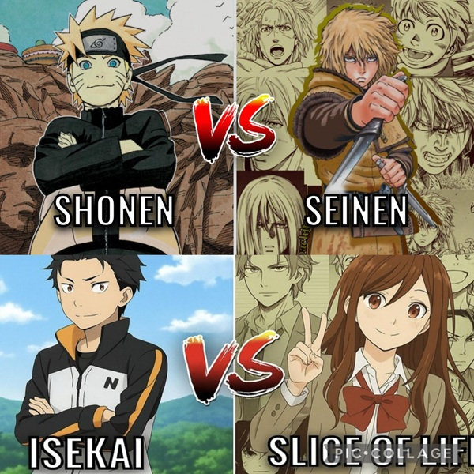

Exploring Popular Anime Genres
One of the most compelling aspects of anime is the sheer variety of stories it tells. Unlike many other forms of media that might be pigeonholed into just comedy or drama, anime has developed unique and highly specific genres that have become global phenomena. Understanding these key categories will help you navigate the thousands of available shows and find exactly the kind of experience you are looking for.
Four Essential Categories
- Shonen : Aimed primarily at teenage boys, focusing on action, adventure, and themes of friendship and perseverance. Examples: Naruto, One Piece.
- Seinen : Targeting an older male audience with more mature, complex, and often darker themes. Examples: Vinland Saga, Berserk.
- Isekai : A modern phenomenon where protagonists are transported to fantasy worlds. Examples: Re:Zero, Sword Art Online.
- Slice of Life: Focuses on mundane, everyday experiences, often comedic or deeply emotional. Examples: Horimiya, K-On!.
Interactive Genre Guide
Click on any of the quadrants in the image below to explore more titles from that specific genre on MyAnimeList.
